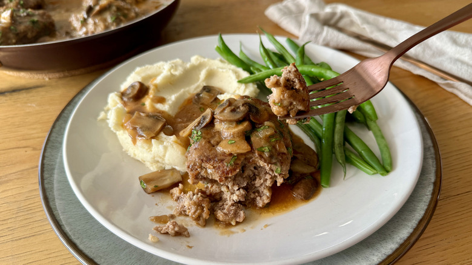

Salisbury Steak

Comfortable and Delicious dish of Tender Beef and Homemade Gravy!
Home Cooked Steak that produces rich, satisfying flavour.
Bring Back the Memories of TV Dinners!
Ingredients
Steaks:
- 1 pound, 85% Lean Ground Beef
- 1/2 Cup Plain Bread Crumbs
- 1 Large Egg, Beaten
- 2 Tablespoons Ketchup
- 1 Tablespoon Worcestershire Sauce
- 1 Teaspoon Dry Mustard
- 1 Teaspoon Soy Sauce
- 1/2 Teaspoon Freshly Ground Black Pepper
- 1 Pinch Cayenne Pepper, or to Taste
- 2 Tablespoons Salted Butter
Gravy:
- 2 Tablespoons Salted Butter
- 12 Large White Button Mushrooms, Sliced
- 1 Cup Diced Onion
- Salt to Taste
- 2 Tablespoons All-Purpose Flour
- 3 Cups High Quality, Low-Sodium Beef Broth
- 2 Tablespoons Ketchup
- 1 Tablespoon Worcestershire
Steps (VIA ALLRECIPES)
-
Prepare the steaks: Mix ground beef, bread crumbs, egg, ketchup, Worcestershire sauce,
mustard, soy sauce, pepper, and cayenne together in a mixing bowl with a fork or your hands
until well combined. Cover with plastic wrap and refrigerate for at least 2 hours or overnight.
-
When almost ready to cook the steaks, make the gravy:
Melt butter in a large nonstick skillet over high heat.
Add mushrooms, onion, and salt; sauté until nicely browned, 5 to 8 minutes.
Reduce the heat to medium and add flour; cook and stir for 3 minutes.
-
Stir in broth, ketchup, and Worcestershire sauce.
Increase the heat to high and bring to a simmer.
Reduce the heat to medium and cook, stirring occasionally,
until gravy thickens slightly and reduces, about 10 minutes.
Taste and adjust salt as needed.
- Transfer gravy to a liquid measure. Scrape the pan clean with a spatula.
-
Finish the steaks: Remove meat from the refrigerator and divide into four equal portions.
Moisten hands and form each portion into a 1/2-inch-thick oval patty.
Lightly season both sides of patties with salt.
-
Melt butter in the clean skillet over medium-high heat.
Add patties and cook until browned, 2 to 3 minutes per side.
Pour in gravy and bring to a simmer.
Reduce the heat to medium and continue to cook until gravy is
piping hot and steaks are no longer pink in the center, about 5 more minutes.
An instant-read thermometer inserted into the center should read at least
160 degrees F (70 degrees C).
Home